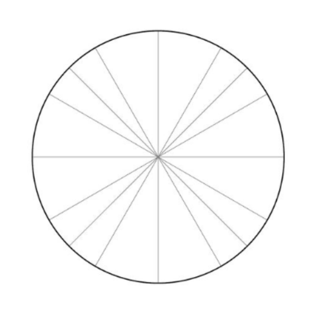

1. Draw the directed angle $-\frac{7\pi}{6}$ in standard position. Show the direction of rotation.

2. Draw the directed angle $\frac{17\pi}{3}$ in standard position. Show all complete rotations before the terminal side.
3. Draw the directed angle $-\frac{13\pi}{4}$ in standard position. Show the complete rotation(s) and the terminal side.
4. Find the angle in $[0,2\pi)$ that is coterminal with $-\frac{19\pi}{6}$.
5. Find the angle in $[0,2\pi)$ that is coterminal with $\frac{29\pi}{4}$.
6. Find the reference angle for $\frac{31\pi}{6}$.
7. An angle $\theta$ in $[0,2\pi)$ has unit-circle coordinate $\left(-\frac12,\frac{\sqrt3}{2}\right)$. Find $\theta$.
8. Evaluate all six trig functions exactly for $\theta=-\frac{\pi}{4}$.
9. Evaluate all six trig functions exactly for $\theta=\frac{11\pi}{6}$.
10. Evaluate all six trig functions exactly for $\theta=\frac{4\pi}{3}$.
11. Evaluate all six trig functions exactly for $\theta=2\pi$. Identify any undefined values.
12. Evaluate all six trig functions exactly for $\theta=\frac{13\pi}{6}$.